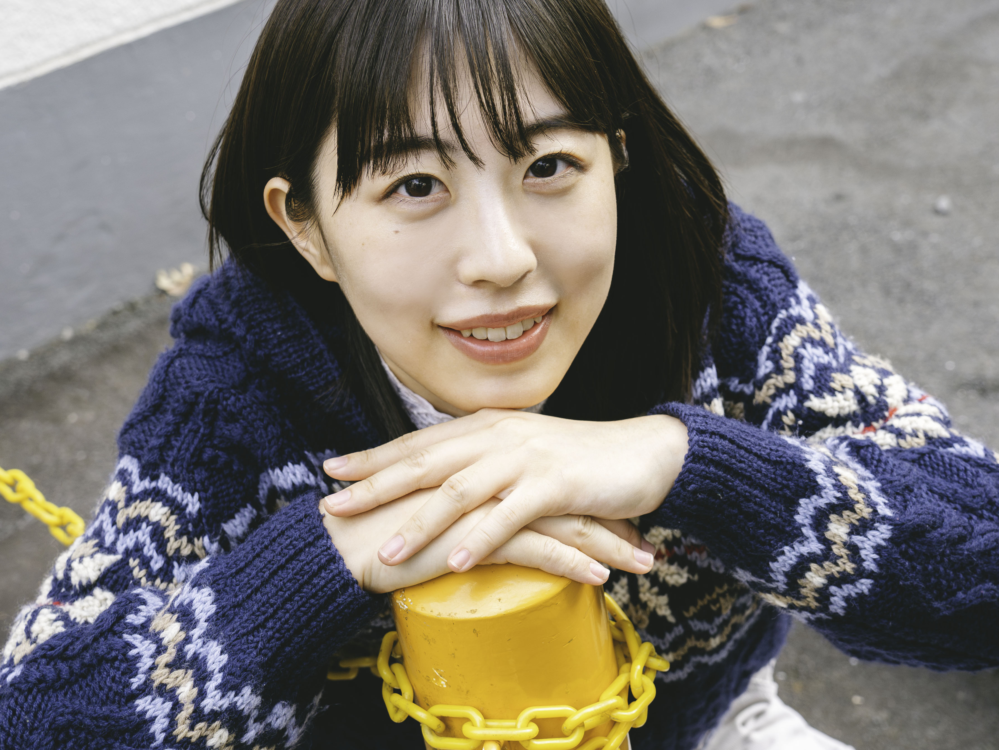
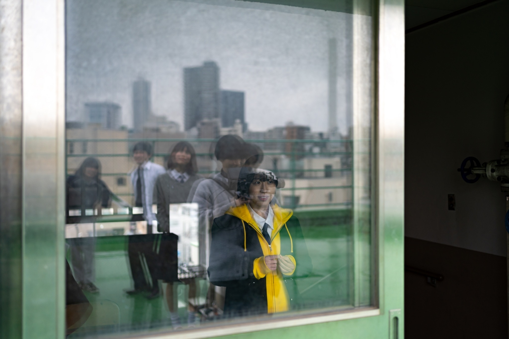
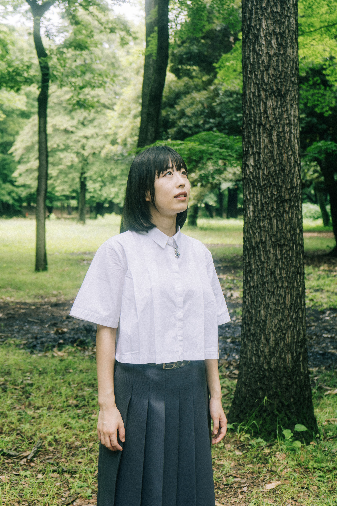
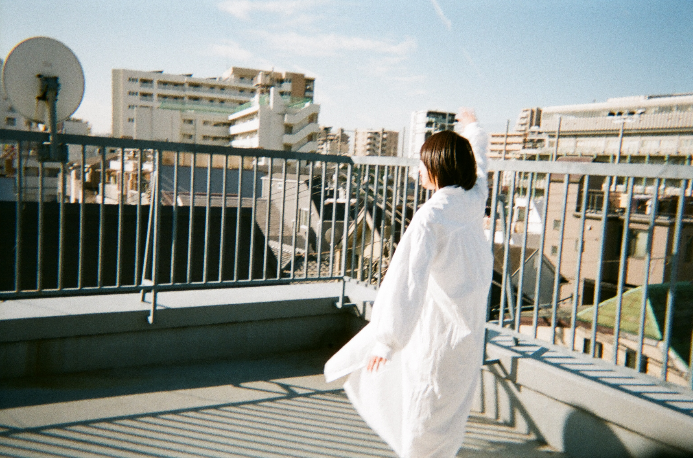

ABOUT

広島県出身。
大学の演劇サークルを経て2023年に上京し、役者の活動をスタート。
身長164cm。特技は球技、ピアノ、アコースティックギター。
大学の演劇サークルを経て2023年に上京し、役者の活動をスタート。
身長164cm。特技は球技、ピアノ、アコースティックギター。
WORK

Stage

Movie

CM/TV

Other
2025年
南極第8回公演『ゆうがい地球ワンダーツアー』
作・演出：こんにち博士 2025年9月4日〜9月7日
役名 紀寿子
劇団スポーツ 本公演『逆VUCAより愛をこめて』
作・演出：内田倭史・田島実紘 下北沢駅前劇場 2025年1月31日〜2月1日
役名 小川サナ
2024年
南極 第六回本公演『バード・バーダー・バーデスト』
すみだパークシアター倉 2024年9月19日〜23日
役名 カイロ
2023年
南極 第五回本公演『怪奇星キューのすべて』
作・演出：こんにち博士 北先住BUoY 2023年8月3日〜6日
役名 UB
2020年
演劇引力廣島第17回プロデュース公演『泥を泳ぐ』
作・演出 象千誠 アステールプラザ 2020年2月21日〜24日
役名 佐久間理絵
第7回中国ブロック劇王決定戦独壇場『マッチアップ』 最優秀俳優賞受賞
広島市青少年センター 2019年10月
役名 香
WEB WORK